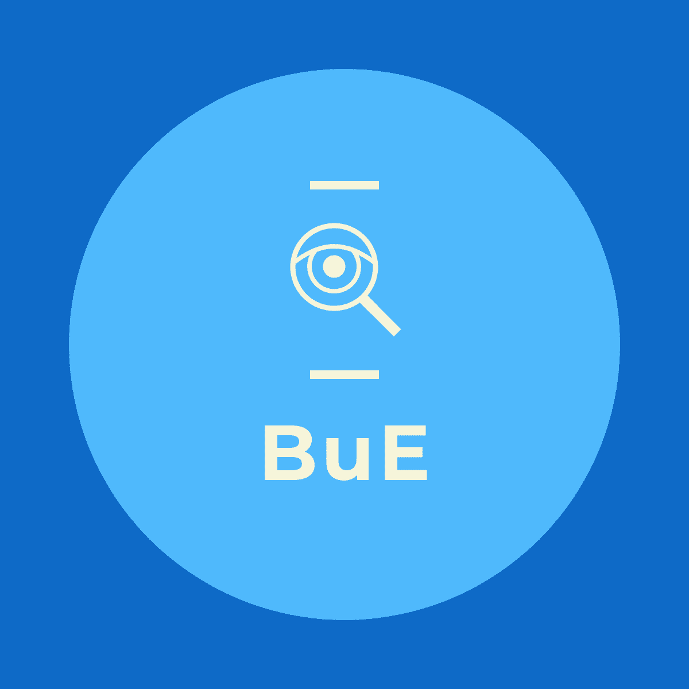

<nav>
    <mat-toolbar>
    <div fxHide.get-xs class="hamburger">
        <div id="nav-icon1" (click)="toogleM()">
            <span></span>
            <span></span>
            <span></span>
        </div>
    </div>
    <div class="ul-s">
        
        <ul>
            <li><a href="#"></a></li>
            <li><a routerLink="">Trazi</a></li>
            <li><a routerLink="/prijaviproblem">Prijavi problem</a></li>
            
        </ul>
       
        <ul class="logout">
            <li><button class="logout-btn" routerLink="/profil">Profil</button></li>
            <li><button class="logout-btn">Odjavi se</button></li>
        </ul>
    
    </div>
</mat-toolbar>
</nav>